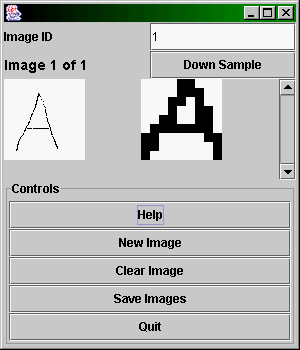
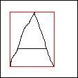
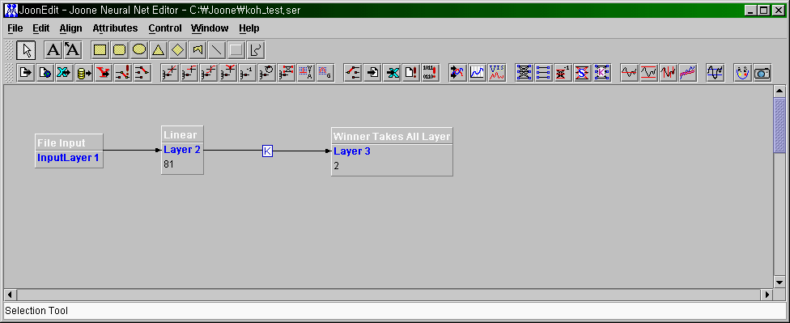
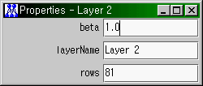
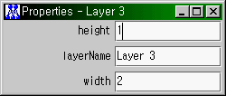
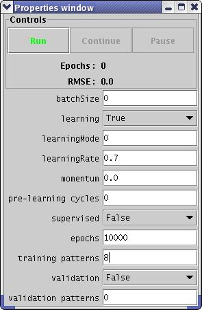

SOM / KOHONEN NETWORK
Image Recognition Tutorial
Introduction
This tutorial is intended to give a basic example of how to perform
image / character recognition using SOM / Kohonen neural network
architectures.
This tutorial uses a basic application called
org.joone.samples.editor.SOMImageTester
You can use the sample application to draw basic black and white colour
images and save the output into a file format that Joone recognises.
The example presented in this tutorial teaches the user how to setup a
network that recognises the characters 'A' and 'B'. The reade can use
this technique to setup a network that will recognise an arbitary number
of characters.
Sample
Application Quick Guide
The sample application is fairly self explanatory
but you can use the guide below in order to use the application.

Features
Drawing Area - The high resolution 'A' image
shown above is where the user can draw custom images.
Image ID - This is the identify of the image,
you can use this number to mark what character the image is. Only
numbers can be entered here. I.e a 1 could mean character 'A' and 2
could be 'B'.
Down Sample - This allows you to preview the
down sampled image after drawing. To obtain the down sample the
application first crops the image in the draw area. The image is cropped
by obtaining the left most black pixel , top most black pixel etc to
find the bounds of the cropped image. See the image below.

Secondly the cropped image is scaled down to a 9x9 image. The image is
scaled by splitting the cropped image into a series of grids relating to
each pixel in the 9x9 down sampled image, then if a grid in the cropped
image contains a black pixel then the relevant pixel in the 9x9 down
sampled image will contain a black pixel. The application automatically
down samples each image when the user saves the the images to a file.
Help
This presents some basic help on the application.
New Image
Creates a new image for drawing a character/image into.
Clear Image
Removes all the black pixels from the current image.
Save Images
Allows all images to be saved to a Joone format file for use in a File
Input Synapse. The format is 81 pixel inputs followed by the image id.
Quit
Allows you to quit the application.
Data Setup
Start the example application SOMImageTester. See the basic guide above
on how to use the application.
First we need to create several 'A' character images and several 'B'
character images that will be used in training and testing.
Draw the 4 'A' characters in the drawing panel clicking on New Image
when you have finished each one. The down sample button can be used to
see what each character looks like down sampled. When you have finished
drawing the 4 'A' characters then draw four 'B' characters. Then use the
Save Images button to save them out to a file, remember the file name
and location we will call this 4As4Bs.txt in this example.
Note the more samples of a specific character you draw will mean the
network is better able to recognise that character. You'll have noticed
that the image gets cropped and down sampled, this is to stop the
network from just recognising the character's size.
We now need a couple of test character's. Close and re-open the
application , draw one 'A' character and save it we will call this
testA.txt. Close the application again and re-start, this time draw a
'B' character and save the file we will call this testB.txt.
Neural Network Setup
For the neural network we will be using SOM components thus the network
will be unsupervised. We will need to input the previously produced file
into a linear layer of 81 inputs. This will by be fed to a Winner Takes
All layer via a Kohonen Synapse. We can use a File Input Synapse to
load the file in. See the image below ...

Note the Winner Takes All layer has two neurons, this is to ensure it
classifies out two characters.
Input Layer Properties

Note our input images have 81 inputs i.e the 9x9 down sampled image
that the application made earlier.
Linear Layer Properties

Note the rows here must match the inputs from the file input synapse.
Winner Takes All Layer Properties

Note the height or width should be 2 and 1, either can be 2 but not
both. This ensure the layer contains 2 neurons for our two character
classification.
Control Properties

Training The Network
Ensure the network has been set up as in the previous section. The run
the network. When it has finished 10000 epochs it should have learned
how to recognise the character 'A' and 'B'.
We need to find out which neuron fires on an 'A' character and which
one fires on a 'B'.
We need to attach a file output synapse to the Winner Takes All Layer.
Do this now and in the file output synapse set the file name to
something like test.txt, in the control panel set the number of epochs
to 1 and the learning property to false.
Run the network again and examine the text.txt file, you should see 8
rows and two columns. The column represents the neuron and the row the
character they are trying to recognise i.e 1-8. We now that the first
four characters were the character 'A' and the lest four were 'B'
characters. Check that the test.txt contains 1.0 in the same column for
four rows then 1.0 in the other column for the last four rows. On hour
network it came out like this ...
0.0;1.0
0.0;1.0
0.0;1.0
0.0;1.0
1.0;0.0
1.0;0.0
1.0;0.0
1.0;0.0
So we now know that by looking at the first four rows neuron 2 fires
for character 'A' and neuron 1 fires for character 'B'. It could be the
other way round for you.
If at this point the it is not clear i.e neuron 2 fires for both an 'A'
and 'B' then you might not have setup the network correctly or it may
need more training.
Testing The Network
To test the network , modify the file name in the file input syanpse ,
select the testA.txt in order to test a character 'A'.
We have only one character in this file so in the control panel set the
validation patterns to 1 and the validation mode to true. Run the
network again. Examine the test.txt file, check if the correct neuron
fired. In our case it was correct ..
0.0;1.0
Neuron 2 fired indicating that the network thought it was a character
'A' , it is correct.
You can do the same for the testB.txt file.
Using The Network
It is possible to use this network in your own application but your
custom application must present 81 inputs which are written as row1
x,x+1,x+2,x+3,...,x+9 , row2 x,x+1,x+2,x+3,....x+9 , row3 ..... , row9
x, x+1,x+2,...,x+9. Direct input from memory will require the Memory
Input Synapse.
An on pixel is represented as 1.0 and off 0.0.
The network can obviously not handle colour just black (on) and white
(off).
Your application will also have to crop the image and down sample it to
the correct size.
Further Work
Image recognition is a fascinating field and you'll probably want to
experiment in recognising different images / objects. At the time of
writing the Joone project is looking the producing an Image Input
Synapse that will enable users to present images from files or Java
images. If this is available then you could use this to easily load
images into the network for training and running.
If this is not available then you will have to write some image
pre-processing in your custom application.
Something worth thinking about when looking at image recognition is
things like colour , size , shape, texture etc. An extension to the this
example might be to enable the net to recognise coloured characters but
independent of the actual colour. If you always present 'A' in green
and 'B' in blue and train it then when you come to test it might have
just learned how to recognise the colours green and blue, then when you
try and present a green 'B' it doesn't recognise it according to what
you were thinking of. In this case you should present 'A' and 'B' in
different colours.
In the classic tank hiding in jungle example a research team wanted to
train a network to spot tanks hidden in a jungle. They went out an took
pictures of tanks hiding in a jungle and pictures with no tanks. They
trained the network and when they tested it the network worked very
well. However to verify the network they went out a took more pictures
and tested it again. This time it failed miserably. Why? For the
training images the researchers took pictures of the tanks hiding in the
jungle on sunny day and the ones where the tanks were not hiding on an
overcast rainy day. The network had simply recognised that it was sunny
or cloudy.